Scoreline on iPhone Duo
Device audit · 25 Oct 2026 · main @ 8652b7e · iPhone Duo simulator, iOS 27.1 (24A94425), Xcode 27.2 RC · dark mode, live data
Verdict
The app launches and works in every posture: no crashes, no letterboxing, and none of the platform blockers (no UIRequiresFullScreen, no Face ID strings, scene lifecycle already in place). But it isn't Duo-ready yet. One visual bug covers live scores in three of the four postures, and the unfolded screen falls back to an iPad layout that drops search and ads. It also uses none of the space the Duo adds.
- Ship-blocker: a large frosted "glass blob" covers half the Games screen whenever iOS moves the toolbar to the side, which is every posture except unfolded-portrait. Root cause confirmed by experiment, and the fix is one line.
- Biggest structural gap: unfolded, the Games tab switches to the iPad "board" (fixed 300pt sport columns). It has no search and no native ads, ignores the sport filter, and wraps scores in narrow cards.
- Biggest opportunity: a nearly square 951×669pt canvas, while game detail, calendar and match centre all stay single-column. List + detail side by side is the obvious Duo experience, and it's mostly a layout change.
Fixed on duo-support
Branch duo-support (from main 8652b7e, uncommitted). Builds for iOS and macOS and has been re-verified on the iPhone Duo simulator in all four postures. Screens below are from the fixed build.
| Finding | Status | What changed |
|---|---|---|
| Glass blob over scores | fixed | Filter menu uses a plain Label. "Today" has a symbol. visibilityPriority on iOS 27 keeps the filter when the rail runs out of room. |
| Unfolded = iPad board | fixed | Layout follows measured width (GamesLayout): list below 720pt, list + game detail from 720pt to 1100pt, board above that. The board now has search, a lead ad, and honours the sport filter. Its columns fit whole and snap. |
| Folding loses your game | fixed | Folding pushes the selected game full screen; unfolding moves a pushed game back into the detail column. |
| Calendar sheet re-appears / leaks across tabs | fixed | Real bug, every iPhone: updateUIView re-presented the day sheet on every SwiftUI update (live ticks) once a day had been tapped. The sheet now opens only on a tap and is scoped to the Calendar tab. |
| Calendar island / tip covering grid | fixed | From 720pt wide the month sits beside the selected day's live list. Both tips are inline above the month instead of popovers on the rail. |
| Detail screens stretched | fixed | PinnedDetailLayout: from 760pt the scoreboard pins in its own column beside the sections. Race/tennis/golf/series detail are capped at a readable width; pitch at 420pt, shot map at 560pt. |
| League hub picker | fixed | Wide: "Standings & Schedule" side by side. |
| Multi-window assumptions | fixed | One NativeAdManager per window. The paywall is a scene-local environment action. Launch counter, What's New, onboarding and the rating prompt run once per process. Tapped game notifications now open the game (previously unobserved), in one window. |
| Open in New Window | added | GameDetailWindow scene on iOS too, in team-game context menus where a second window can open (regular width). |
| Half-folded stand mode | built, untested | FoldReader (UIHingeInteraction + reservedRegions(kind: .division), iOS 27.1) puts the scoreboard above the fold. ArrangementView isn't in the 27.2 SDK; this uses the UIKit APIs that are. DeviceHub's half-fold wasn't exercised. |
| minHeight 500 / UIScreen.main / chips under rail | fixed | Mac-only frames, window-based ad width, clipped chip strip. |
| Back button has no label | system | The system back button in the rail; nothing to change in app code. |
| Live Activity tint / StandBy | deferred | A tint would restyle the Lock Screen on every iPhone, and StandBy can't run in the Duo simulator. |
Tests: new AdaptiveLayoutTests (layout breakpoints, fold state, calendar day grouping) all pass. ScheduleFilterTests.testFilterShowsAllSportsWhenAllEnabled fails on this branch and identically on main, so it predates this work.
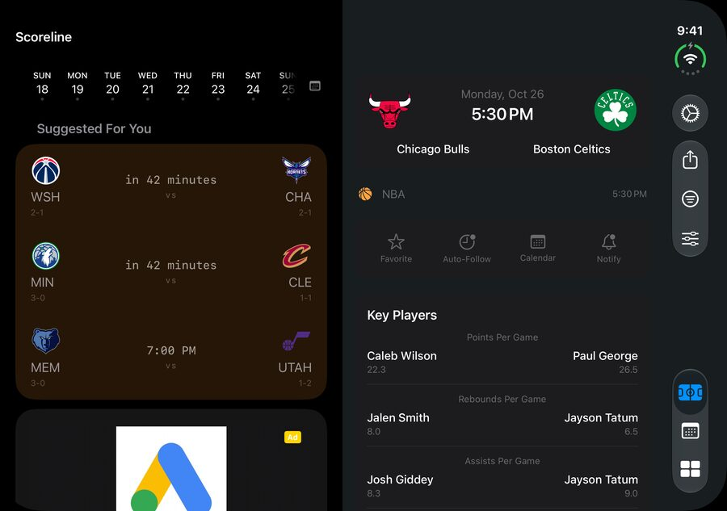
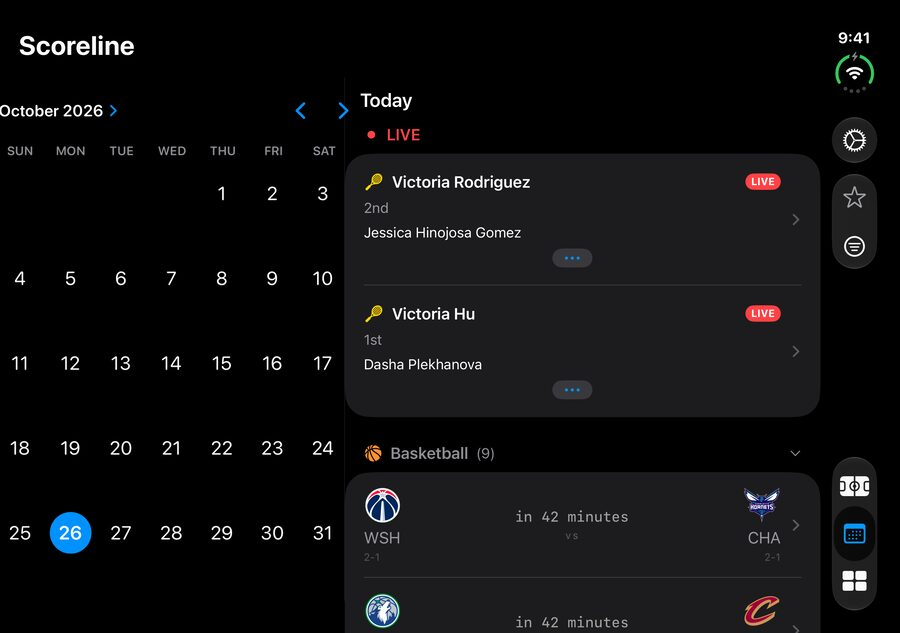
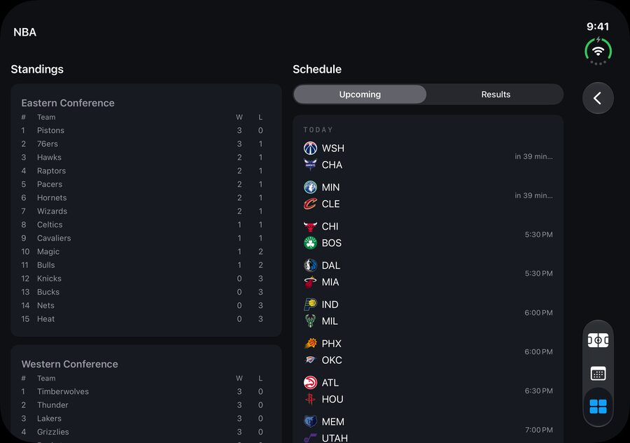
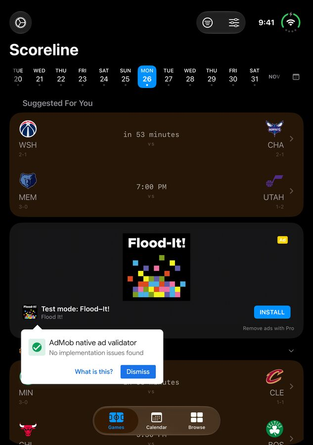
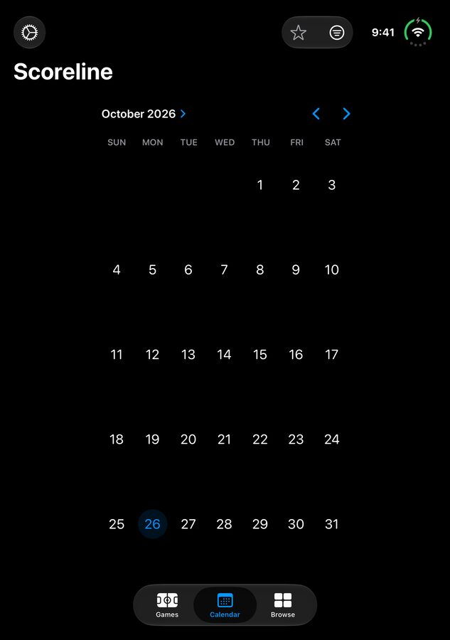
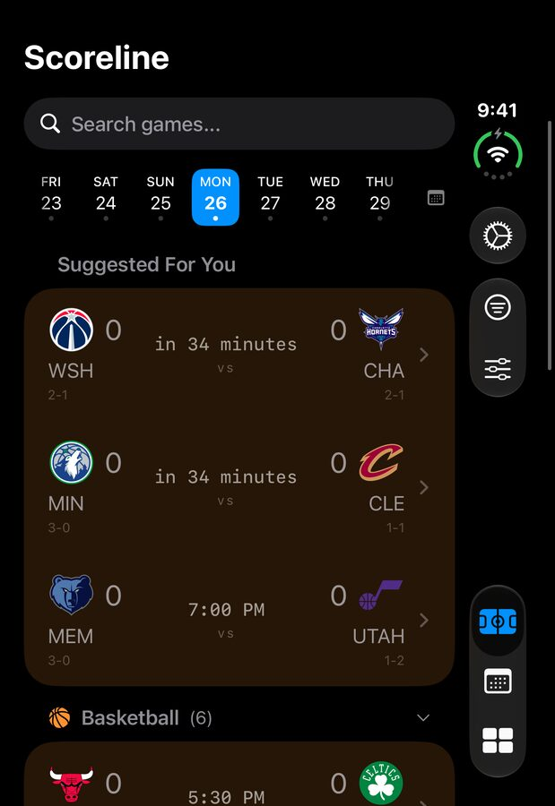
How the Duo presents the app
| Posture | Canvas (pt) | Size class (w/h) | Toolbar / tab bar | Games layout we render |
|---|---|---|---|---|
| Folded · outer portrait | 466 × 678 | compact / regular | Vertical rail on the right: clock, gear, actions, tabs | List |
| Folded · outer landscape | 678 × 466 | compact / compact | Vertical rail on the right | List |
| Unfolded · inner landscape (natural) | 951 × 669 | regular / regular | Vertical rail on the right | iPad board (3 × 300pt columns) |
| Unfolded · inner portrait | 669 × 951 | regular / regular | Horizontal top bar + floating bottom tab bar | iPad board (~2.2 columns visible) |
The inner display ignores XCUIDevice.orientation and the app's supported orientations, as Apple's notes say, so posture can only be changed in DeviceHub. Half-folded and Split View were not exercised (see Not covered).
Screen × posture matrix
| Screen | Outer portrait | Outer landscape | Inner landscape | Inner portrait |
|---|---|---|---|---|
| Games | blob over scores | ok after fix | blob + board | board, wrapped scores |
| Game detail | ok | not captured | stretched 1-col | stretched 1-col |
| Settings (sheet) | ok | — | ok | ok |
| Calendar | tip blocks grid + tabs | — | 250pt island | — |
| Calendar day | ok | — | sheet leaks across tabs? | — |
| Browse | ok | — | ok (4-col grid) | — |
| Browse › Soccer | chips under rail | — | ok | — |
| What's New / Onboarding | ok | minHeight 500 > 466 (code) | — | — |
Findings
SportsCal/Shared/Views/DayPage.swift:1266-1278 (sport-filter Menu label) · toolbar at DayPage.swift:487-511- What
- A rounded Liquid Glass shape, about 300pt wide, sits over the right half of the Games screen and hides clocks, scores and the whole Soccer column. It's there on a clean launch with no automation, so it's real. It shows on the outer display in both orientations and on the inner display in landscape. It does not show in inner portrait, the only posture where iOS keeps toolbars horizontal.
- Cause
- The filter menu's label is a custom
HStack(icon + redTextcapsule for the live count). The vertical toolbar can't lay it out, so its glass container grows across the content. Verified: swapping the label forLabel("Filter", systemImage:)removes the blob, and the item renders correctly in the side rail (last screenshot). - Fix
- Use a standard
Label, and move the live count to the system toolbar badge (.badge(totalLiveCount)on theToolbarItem, behind#available(iOS 26, *)). Show it in the menu header on older iOS.
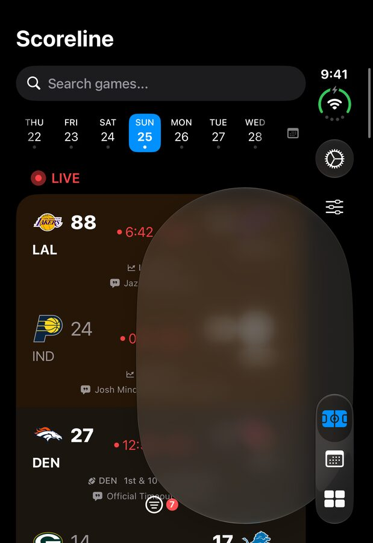
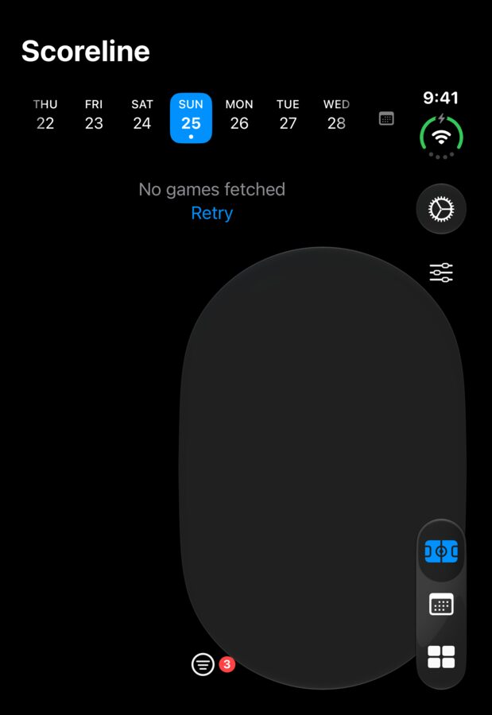
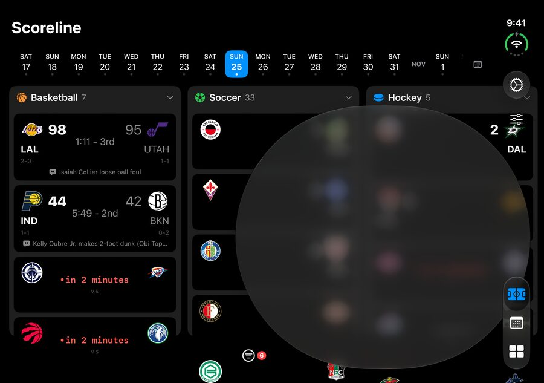
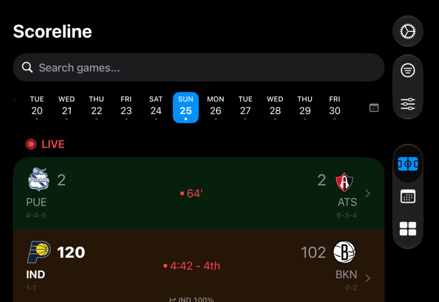
DayPage.swift:360-362 isBoardLayout = sizeClass == .regular · GameBoardLayout.swift:61-83 fixed 300pt columns · search only on listBody (DayPage.swift:789) · ads only in list paths (:862, :1495)- What
- The inner display reports regular/regular in both orientations, so every unfolded user gets the iPad board. On iOS the board has no search field, no native ads (free users earn nothing on the Games tab), and no "peek hidden games". Its columns ignore the sport filter. Fixed 300pt columns give 3 columns in landscape, with the third running under the rail, and about 2.2 in portrait, where card text wraps ("120" breaks into "12 / 0") and clocks truncate.
- Also
- Unfolding or folding swaps list ↔ board, so scroll position and any search in progress are lost at the moment the user opens the phone.
- Fix
- Choose the layout from available width (
onGeometryChange), not size class. Keep the list (or a two-pane, see the plan) below roughly 900pt, and carry search, ads and the filter into whichever layout renders. Hide empty columns on iOS and let columns flex from a 260pt minimum.
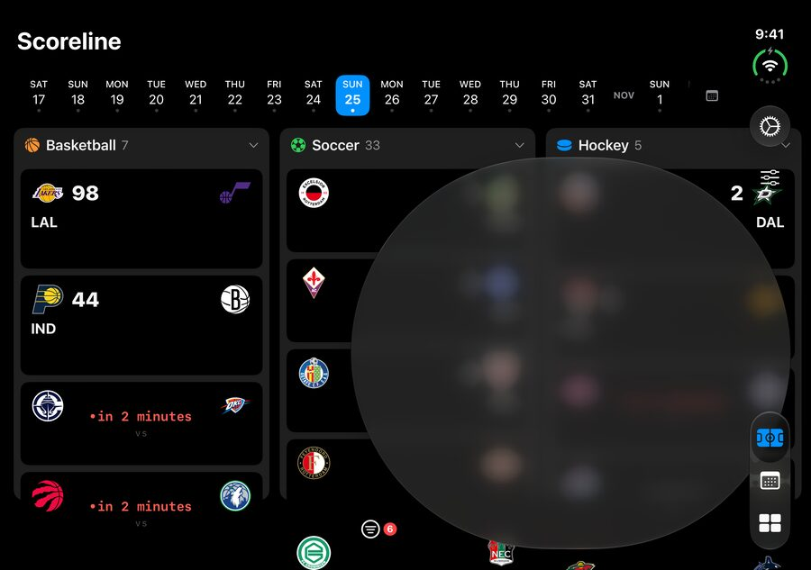
DayPage.swift:498-509- What
- The rail fits symbols, and the
Text("Today")item is simply dropped (it's missing in every vertical posture). Toolbar overflow also has no priority, so the system picks which item survives. - Fix
Label("Today", systemImage: "calendar.badge.clock"), plusToolbarItemVisibilityPriorityon iOS 27.1 (filter > today > manage).
CalendarPage (anchored to the rail's filter button)- What
- On the 466pt outer display the tip popover covers rows 2–5 of the month grid, and until it's dismissed nothing behind it is hittable, including the Games and Browse tabs. On a phone that pops up whenever you fold it, this is the first thing many users will see.
- Fix
- Show it inline (
TipViewabove the grid) on compact width, or anchor it to the grid instead of the rail item.
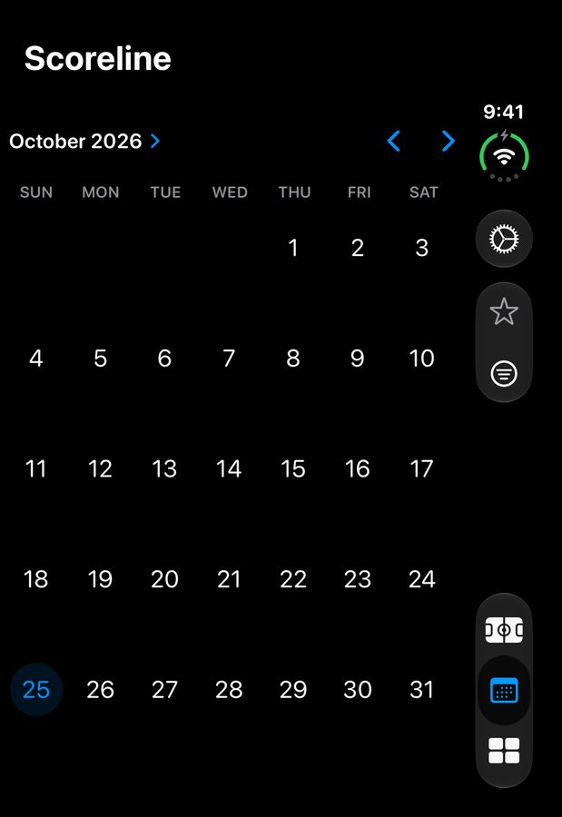
UIApplicationSupportsMultipleScenes = true (manifest generation, project.pbxproj:2610) · SportsCalApp.swift:98-99 · ContentView.swift:261-281 · NativeAdManager.swift:93-96- What
- Split View and second windows arrive on iPhone with the Duo, and our scene manifest opts us in. Each window bumps
launches(inflating the review prompt and onboarding), reruns onboarding and the review request, and receives every.requestPaywallbroadcast (a paywall in each window). All windows get the sameNativeAd, and a native ad can only register to one view. - Fix
- Count launches once per process. Route paywall and onboarding through scene-local state or
openWindow. Assign ads per scene. (Or set multiple scenes to NO until those fixes land, but that gives up a Duo feature.)
CalendarViewRepresentable.swift:124 → .listDetail sheet presented from ContentView.swift:197-233- What
- In inner landscape the "10/26/26" day sheet showed up over Browse › Soccer after the test had switched tabs. The sheet is presented from the root view, not from the Calendar tab. Needs a manual check: it could be a test artifact (the harness's swipe-to-dismiss), but the root-level presentation makes the leak plausible.
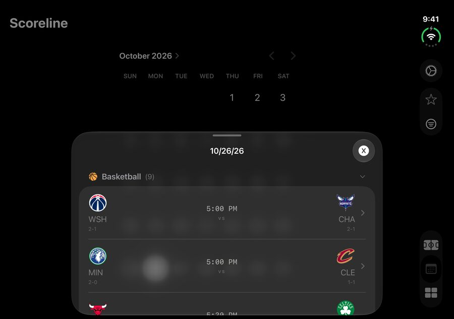
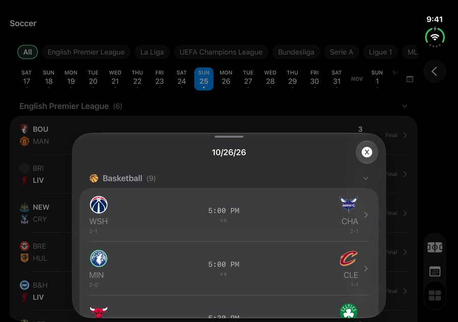
OnboardingPage.swift:61, WhatsNewSheet.swift:57 .frame(minWidth: 400, minHeight: 500) (no macOS guard)- What
- The outer display in landscape is 466pt tall, which is less than the 500pt minimum. The first sheets a new or updating user sees will clip. (What's New rendered fine in outer portrait, first screenshot below.)
- Fix
- Wrap in
#if os(macOS), asSubscriptionSheet.swift:24already does.
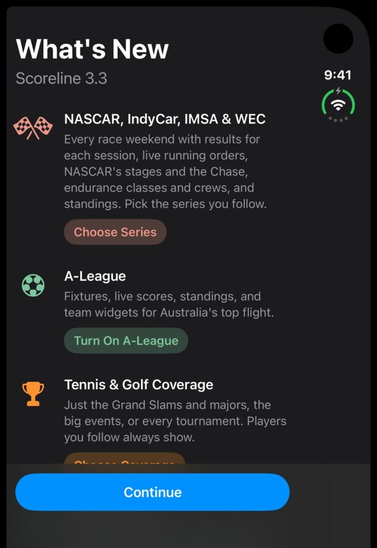
NativeAdCardView.swift:161 proposal.width ?? UIScreen.main.bounds.width- What
- In Split View or a narrow window this sizes the ad to the full screen. Apple specifically warns against
UIScreen.mainon the Duo. Use the proposal, or the window scene's bounds.
BackButton, empty label, in every vertical-rail posture- What
- Captured in the accessibility tree on game detail. It's likely a system issue (we don't customize back buttons), but VoiceOver users hear an unlabeled button. Verify on device and file Feedback; set
navigationTitleon parents so the system has a title to use.
- What
- The horizontal chip row runs to the screen edge under the right-side status rail, so the last chip is cut off beneath the clock. Respect the trailing safe area (Duo insets are asymmetric) with
.contentMargins(.horizontal, …, for: .scrollContent).
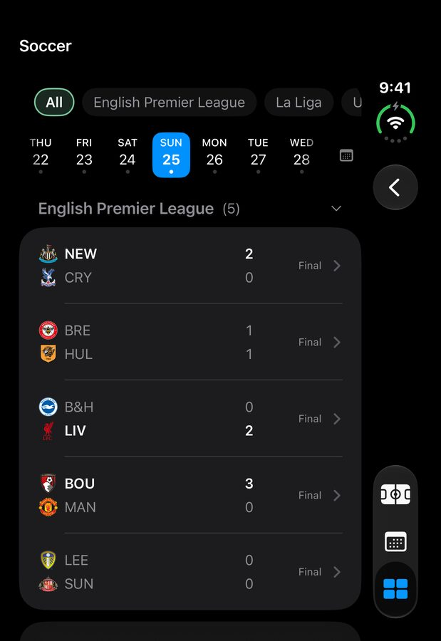
GameDetailView.swift:139-153, SoccerMatchCentreView.swift:41-60, LeagueHubView.swift:104-120 · SoccerPitchView.swift:26,52- What
- Single-column scroll views with no readable-width cap. Team names sit about 600pt apart and pickers stretch. The vertical soccer pitch (68:105 aspect,
.fit) would be about 1,470pt tall at 951pt wide, more than two screens. Short term: cap width at about 700pt and the pitch at about 420pt. Long term: see the plan.


What already works
| ok | No UIRequiresFullScreen, scene lifecycle, no idiom/orientation/UIScreen layout checks apart from the ad above. The app resizes across fold/unfold without letterboxing. |
| ok | No Face ID / LAContext usage, so nothing breaks on Touch ID. |
| ok | Outer display uses the list layout and looks right once the blob is fixed. Game detail, Settings and Browse all adapt to 466pt. |
| ok | Browse's adaptive 160pt grid scales from 2 columns (outer) to 4 (inner). Sheets render as proper form sheets unfolded. |
| ok | All widgets use containerBackground(for: .widget), so StandBy on either display can strip backgrounds correctly. |
Plan of action
The plan is ordered so each phase can ship on its own: stop the bleeding, then fit the canvas, then use the Duo.
Phase 0 Hotfix: ship as 3.3.1 (≈ 1 day)
Each item is small, self-contained, verified or mechanical, and fixes something every Duo owner hits on first launch.
- Blob: filter menu label becomes
Label; live count moves to.badge()on iOS 26+ (DayPage.swift:1266). - Today button:
Labelwith a symbol; addToolbarItemVisibilityPriorityunder#available(iOS 27.1, *). - macOS-only minimum frames: guard OnboardingPage / WhatsNewSheet
minHeight: 500. - Ad width: drop the
UIScreen.mainfallback inNativeAdCardView. - Launch counting: count once per process, not per window
onAppear. - Re-run
testDuoTourin all 4 postures as the regression gate.
Phase 1 Fit the canvas (≈ 1 week)
Make the unfolded experience at least as good as the phone one. Nothing Duo-specific yet; it all also improves iPad and Mac windows.
- Width-driven Games layout: replace
sizeClass == .regularwith a measured-width breakpoint; list (or Phase 2 split) below about 900pt. - Board parity: search, native ads, sport filter and hidden-games peek in the board path; flexible columns from 260pt; hide empty columns on iOS.
- Readable width: about 700pt cap on game detail, match centre, league hub and tournament/race detail; pitch and shot map capped.
- Calendar tip: inline
TipViewon compact width; keep the day sheet scoped to the Calendar tab (and verify the leak). - Safe areas: trailing content margins on horizontal chip rows (asymmetric insets).
- Multi-window hygiene: per-scene paywall/onboarding routing, one ad per scene, and the unobserved
OpenGameFromNotificationwired up while we're in there.
Phase 2 Use the Duo (≈ 2–3 weeks)
This is where "works on Duo" becomes "best on Duo". The inner display is a near-square second canvas, and sports is a list-of-games-plus-one-game app, which suits split layouts.
- Games: list + live detail side by side. When unfolded, the game list sits on the left and the selected game's detail on the right (
NavigationSplitView, or extend the existing macOS.inspectorpath atDayPage.swift:739to iOS regular width). Fold the phone and the selected game keeps going full screen on the outer display (selection in@SceneStorage). - Calendar: month + day side by side.
UICalendarViewon one side and the day'sListDetailViewon the other, instead of a sheet. That fills the 70% of the screen that's empty today. - Match centre in two columns: timeline/momentum/commentary next to pitch lineups/stats.
- Half-folded "stand" mode (
ArrangementView, iOS 27.1): scoreboard and clock on the top half, play-by-play / box score / commentary on the bottom half. The phone on a table as a second screen during a game is a feature competitors don't have yet. - Adopt the
TabAPI with.sidebarAdaptableso the inner display gets the system sidebar or rail, and settoolbarVerticalBehaviordeliberately rather than inheriting defaults. - League hub: standings next to schedule instead of a segmented picker.
Phase 3 Multi-window, StandBy and the Store (ongoing)
- "Pop out live game": bring the macOS-only
WindowGroup(id: "game-detail")and "Open in New Window" to iOS 27.1, so two live games can run in Split View. New windows only open on the inner display; handle the refusal on the outer one. - StandBy on either display: add
supplementalActivityFamilies([.small])andactivityBackgroundTintto the Live Activity, and check the Dynamic Island rendering now that the island sits on the side. - App Store: Duo screenshots become mandatory in April 2027 (inner 2007×2853, outer 1398×2034).
testDuoTour+run_tour.shalready produce correctly sized captures from live data; they need a store-ready variant (light mode, curated games).
Not covered (yet)
| gap | Half-folded posture and the folding reserved region: needs DeviceHub fold controls and an iOS 27.1 build with reservedRegions instrumentation. |
| gap | Split View / second window: multitasking wasn't driven; the multi-window findings come from the code audit. |
| gap | Widgets, Live Activities, StandBy: StandBy isn't available in the Duo simulator runtime; most app extensions don't run there either (Apple's known beta limitation). Needs a device. |
| gap | Light mode, outer-landscape full tour, match centre and league hub drill-downs: the harness supports them; just more runs. |
| gap | Fold/unfold transition itself (state loss when list ↔ board swaps): inferred from code, not filmed. |
How to reproduce
Everything lives on branch duo-audit (uncommitted). The harness is SportsCalUITests.testDuoTour: an XCUITest tour that pauses at each step while the host captures the right panel with simctl io screenshot, because XCUITest's own screenshots only see the inner panel. Set the posture in DeviceHub, then run:
docs/duo/run_tour.sh <tag> <outer|inner>
Setup gotchas: the Duo needs the iOS 27.1 (24A94425) runtime; the 27.2 runtime lists the Duo (iPhone19,4) as unsupported. Display UUIDs change on every boot (the script resolves them by resolution). idb taps don't work with Xcode 27 (SimulatorKit moved). Don't power panels off with screenConfig: it wedges capture until the next reboot.
All captures
Folded · outer portrait (466 × 678)
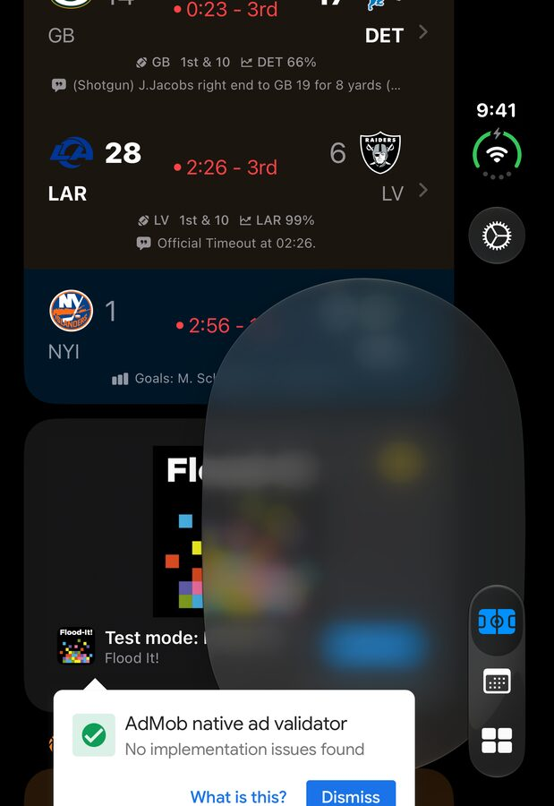
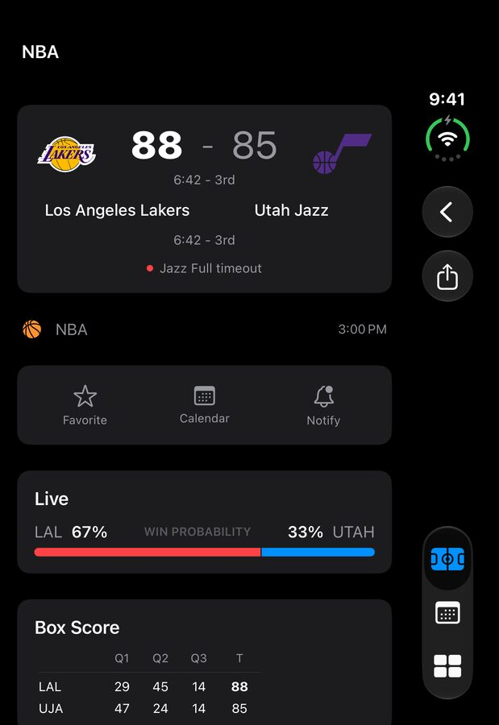
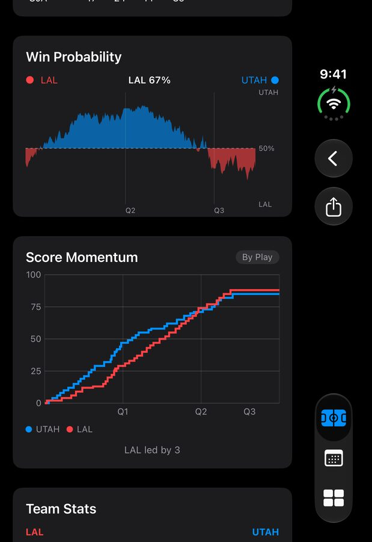
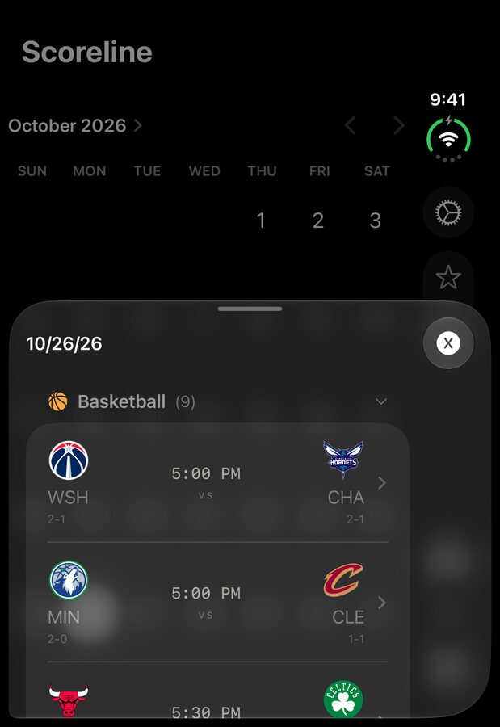
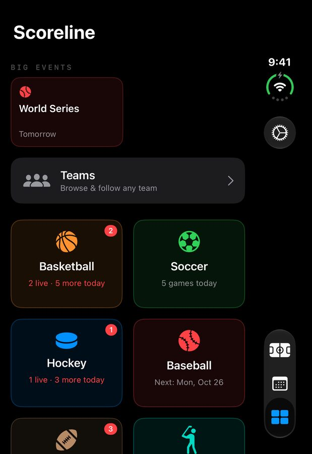
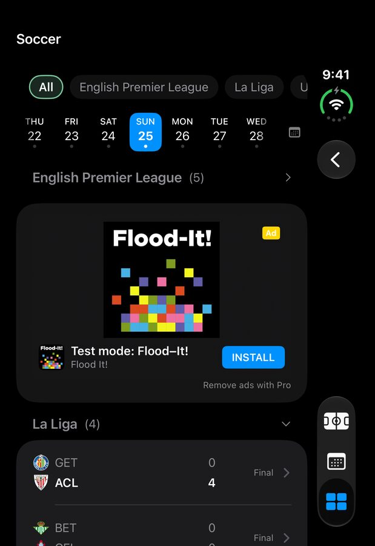
Folded · outer landscape (678 × 466), experiment build
Unfolded · inner landscape (951 × 669)
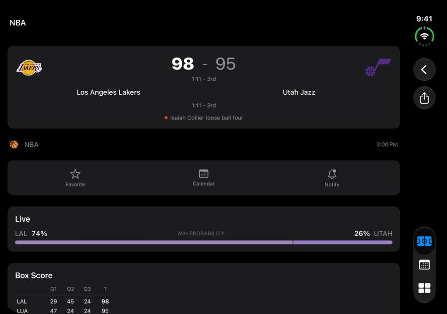
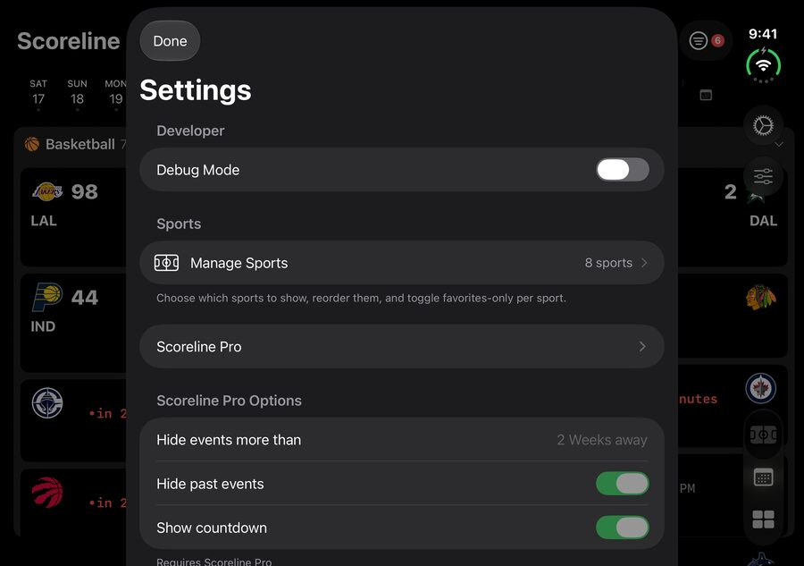
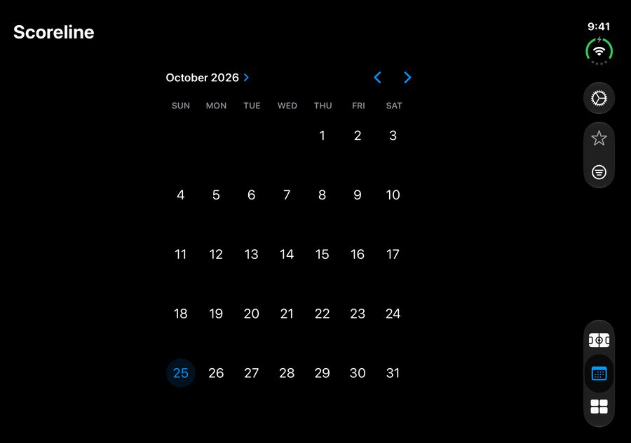
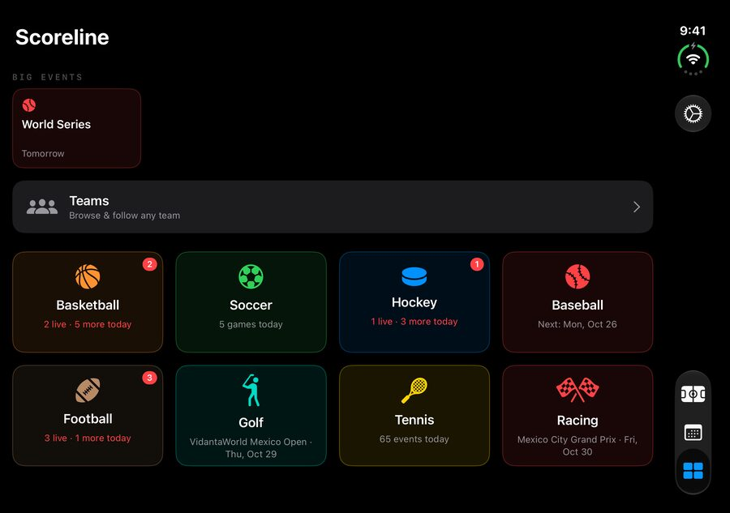
Unfolded · inner portrait (669 × 951)
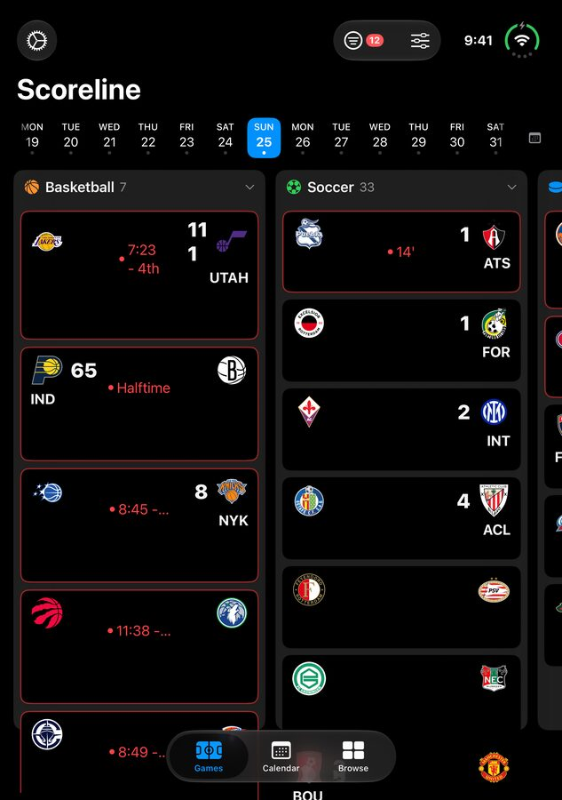
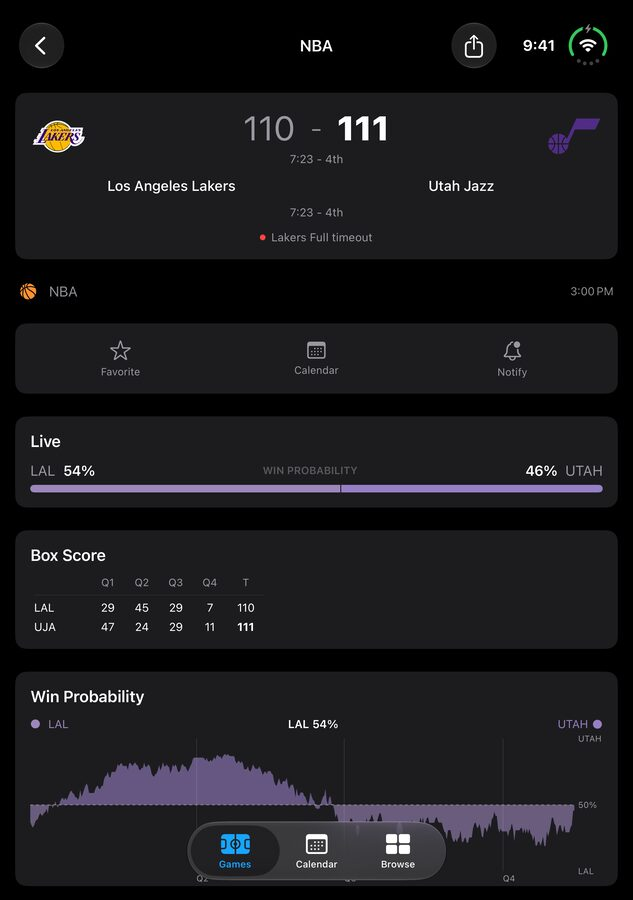
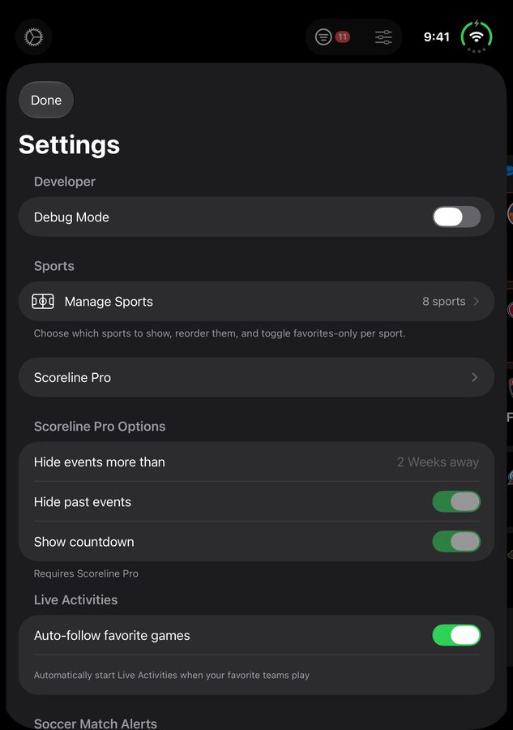